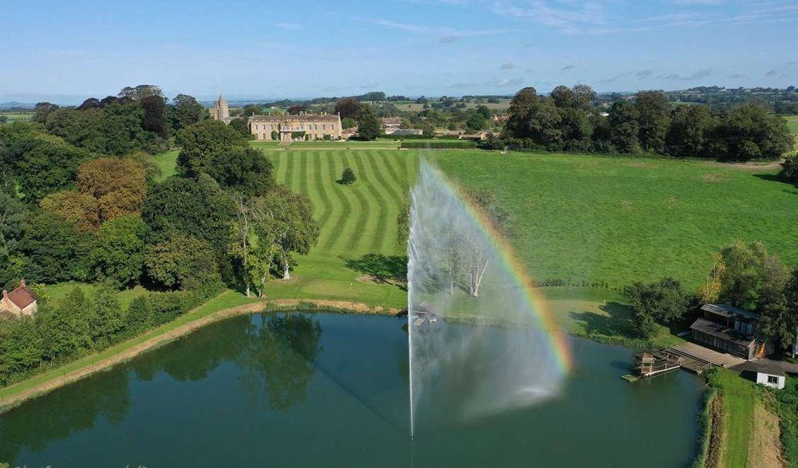
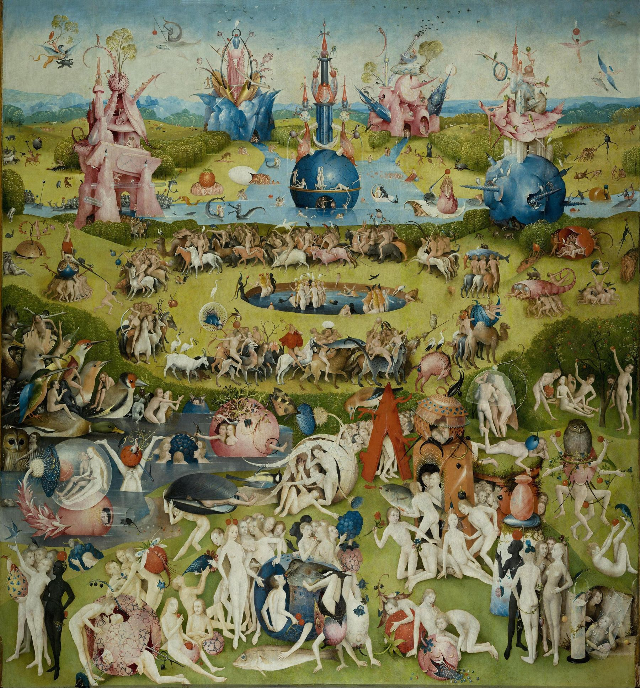
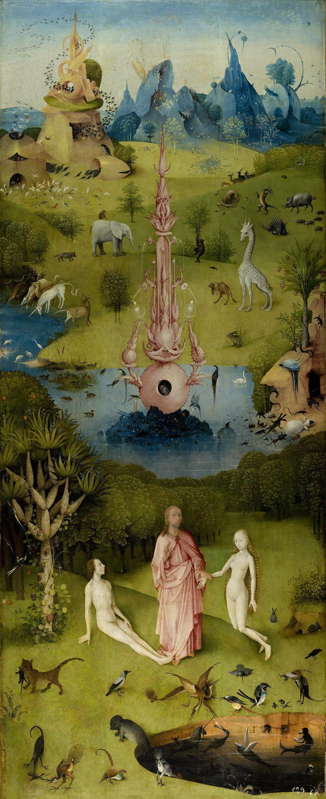
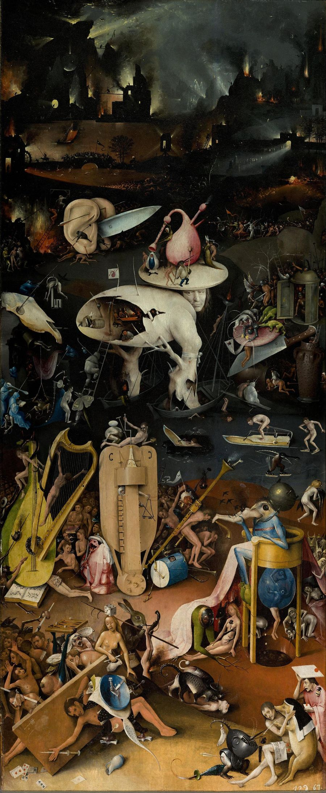

Getting there
North Cadbury Court
North Cadbury, Yeovil, BA22 7DR

North Cadbury Court · Somerset
New Year’s Eve · Black Tie Masquerade
29 December 2026 — 1 January 2027
until we welcome in 2027
Enter the gardenTrip information & itinerary
Four days, sixty-odd revellers, one Grade I listed house and seven centuries of history. Tap a day to step inside it.
North Cadbury Court
North Cadbury, Yeovil, BA22 7DR

Tick things off as they go in the suitcase — it remembers on this device.
0 of 0 packed
Add the whole weekend — including New Year’s Eve night, hour by hour — to your calendar.
Who’s who
The revellers of the garden. Learn a few before you arrive — it’s harder in masks.
Garden of Earthly Delights · Black Tie Masquerade
Lush, strange, decadent, whimsical — a little absurd and wildly abundant. Tap anything to see it up close; heart the ones you love.
Hieronymus Bosch · c. 1490–1510 · Museo del Prado
Where we hope to find ourselves come midnight.



Closed, the shutters show the world on the third day of Creation — a grey glass globe, before colour, before people.
The Garden of Earthly Delights is a triptych painted by Bosch in the late 15th century. It currently sits at the Prado in Madrid and depicts humanity’s moral trajectory from ‘divine creation’ in the Garden of Eden to ‘damnation’ in hell. In the middle — where we hope to find ourselves come NYE — sits the Garden of Earthly Delights: a surreal sprawling landscape filled with jubilant figures revelling among giant strawberries, oversized birds, glass bubbles and fantastical pink towers. Nothing is the right size, nothing quite makes sense — but everyone seems to be having a wonderful hedonistic time.
Scholars still argue about what it all means. Is it a warning against indulgence? A vision of paradise as it might have been? Our aim is not to settle that debate, just to borrow the mood: lush, strange, decadent, whimsical — a little absurd and wildly abundant.
Tap a glowing point to step inside. Use ← → to wander from one delight to the next.
A few ways to wear the painting.
Our garden for the weekend
A Grade I listed house on 1,500 acres of rolling Somerset — seven centuries of noble families, wartime stories and whispers of Camelot.